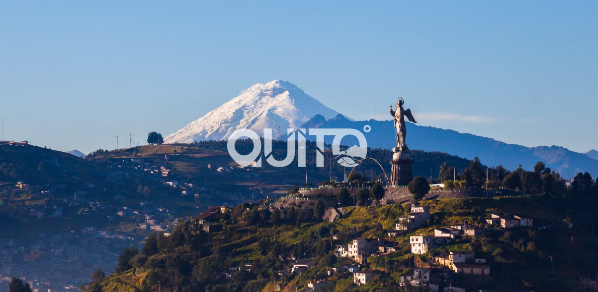
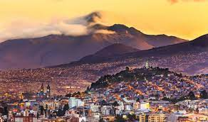

Quito
¡The Light of America!

Quito, the capital of Ecuador, is the biggest city in this country. It has a population of 3 million people, and it is the oldest capital in South America. Quito's altitude is listed at 2,820 m. The equatorial line crosses this city. It was declared a World Cultural Heritage by UNESCO.
You will see that on this website, you will find all the information that you need to have a wonderful experience when you visit Quito. On this site, we will share with all of you all the tourist parts that you can visit in the north, center, and south of Quito.